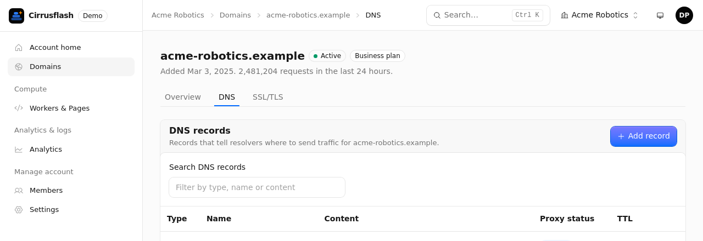
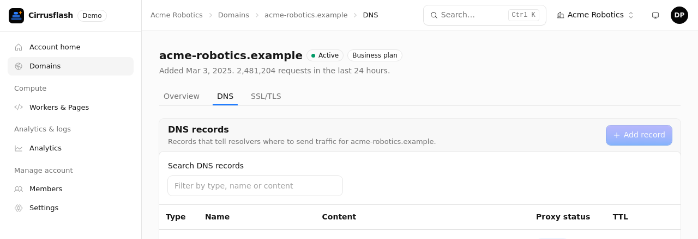
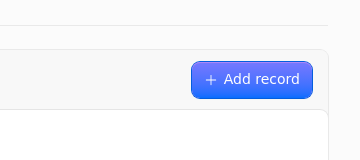
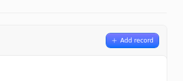
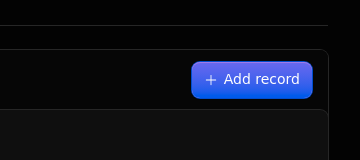
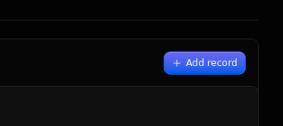

Case file · pull request review
Every pull request, entered into evidence.
Exhibit reads each pull request, finds the pages it really changes, and posts them on the PR: before and after, in light and dark, with a close-up of what changed.


The record
What a reviewer gets on the pull request
One comment, updated as the run goes. Each page the change reaches, with a close-up of the changed element and the full page folded away. Pages where nothing visible changed are folded too, so the comment shows what matters.
-
Exhibit C
It reads the change, then finds the pages it reaches
An agent reads the diff with facts computed from your code: which files import the changed one, which of them use the part that changed, and which route shows it, tabs included. It names only pages the crawl found or your router defines, never a guess: a page the crawl could not reach is checked against the router line that defines it.
-
Exhibit D
A close-up of what changed
The agent names the element where the change shows, by its label and the card around it. Exhibit finds it on both versions and crops it, in every theme, so a two-pixel change is plain to see. The full page is one click away.
-
Exhibit E
Light and dark, checked before they are shown
Each page is captured in every theme your app has, entered the way your app does it: the system setting, a class, an attribute, a stored choice or a URL parameter. Exhibit measures the page before it shows a theme, so a "dark" picture that is really light never reaches the comment.
-
Exhibit F
Clef decides, and its decisions are on file
Clef, Cloudflare's decision model, ranks the pages and compares each before-and-after pair. It returns probabilities, not prose: pages where a change shows come first, and pairs with no visible change are folded. Every request and answer is stored with the run.
Yo dawg, I heard you like evidence
so we put evidence in your evidence so you can review evidence while you review evidence
Procedure
It finds what it can. You tell it the rest.
Exhibit crawls your app for its pages and reads the diff on its own. One file in your repository tells it what it cannot find out: where your previews live, the pages to check on every pull request, and how your app switches themes, when it does not follow the system setting.
The file is read from the base branch, so a pull request cannot change its own configuration.
- Contained. Preview URLs must match an allowlist, and each browser session can reach only the two previews.
- Notes, not orders. Your
instructionsand the pull request text are data for the agent. They can steer what it looks at, never what it can do. - Every push. A new push stops the run for the old commit and updates the same comment.
.github/exhibit.yml# Where the base and head are deployed
preview:
base: https://app.example.workers.dev
head: https://{branch}-app.example.workers.dev
# Pages to check on every pull request
routes:
always: [/]
# Only when your app ignores the system setting
themes:
light: { type: default }
dark: { type: class, target: html, value: dark }
# Notes for the agent
instructions: |
Billing pages are the critical path.Chain of custody
Built end to end on Cloudflare
No servers to run. The webhook, the browser, the models and the evidence all stay on one platform, and the container that drives the browser holds no Cloudflare or GitHub credentials.
- Workers
- Webhook, evidence, and the browser proxy.
- Workflows
- One durable run per commit.
- Sandbox
- The code and the e2e runner. No credentials.
- Browser Run
- Real Chrome for the crawl and the screenshots.
- Workers AI
- Kimi reads the change. Clef judges it.
- Flue
- The agent's tools and typed answer.
- R2
- Every screenshot and decision, on file.
Filing
Set it up
- Deploy Exhibit to your Cloudflare account from the GitHub repository: one Worker with its Workflow and Sandbox, and an R2 bucket. The README has the steps.
- Create a GitHub App that can read contents and pull requests and write comments, point its webhook at the Worker, and install it on your repositories.
- Add
.github/exhibit.ymlwith the URLs of your current version and your previews. - Open a pull request. The comment appears at once and follows the run.
Exhibit is early and open source (MIT). It runs end to end on real pull requests today, and a run takes about three to five minutes.
/domains/acme-robotics.example/dns· visible change 74% ·DomainDns.tsxpassesactionsto the changedCard, so its button gets the new size.Close-up: the "Add record" button in "DNS records"




▸ Full page
▸ Checked, no visible change (1):
/Intent: Make buttons inside Card action areas smaller.
▸ Steps (9 of 9 done)